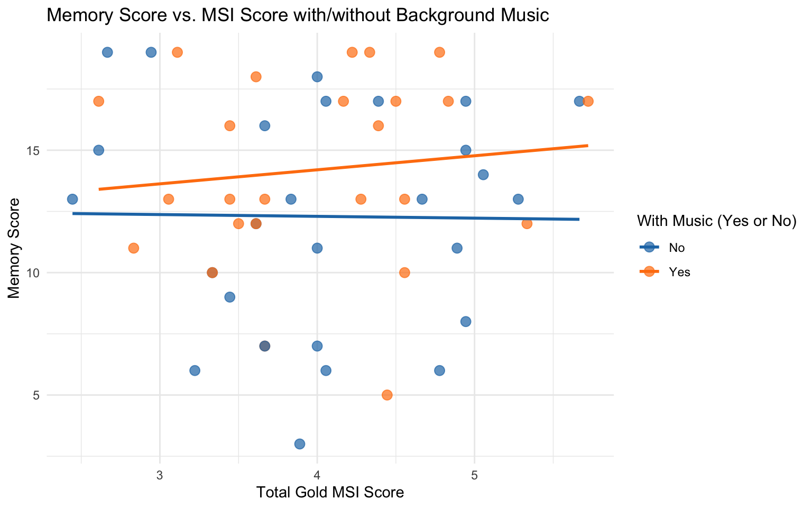
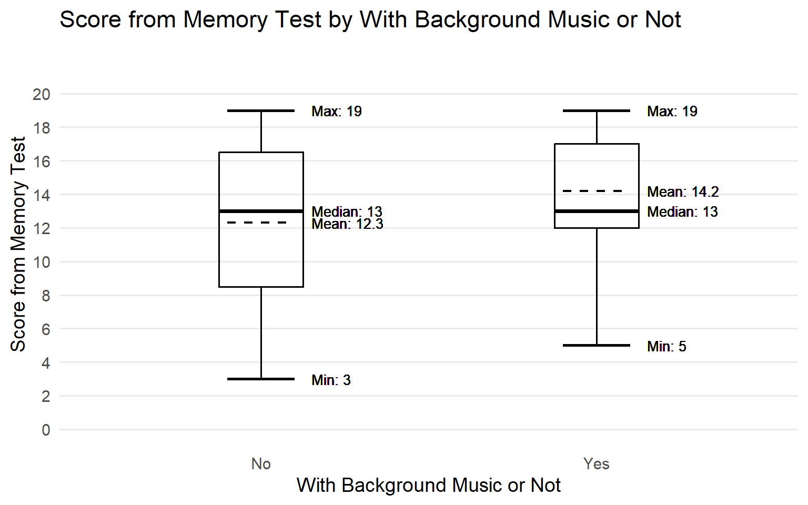
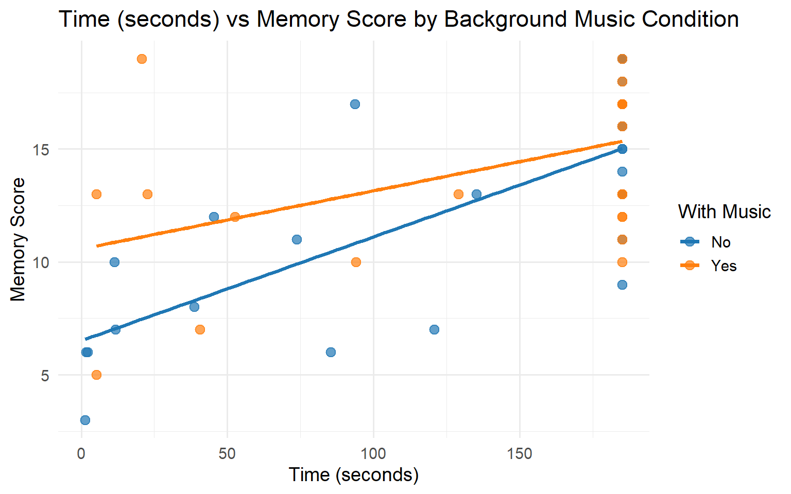

Memory Test Scores Dependent on Background Music and Music Proficiency

Density Heatmaps for Memory Scores Dependent on Total Gold MSI Score

How Does the Time Taken to Memorize Words Impact Test Score?

Our study used a between-subjects randomized experimental design conducted online using Qualtrics. All participants completed the same survey, but were randomly assigned to complete the memory task either with or without background music. This design allowed examination of the effects of background music on memory performance, as well as the role of musical sophistication and study time.
Participants were recruited online and took part voluntarily. The study was completed remotely using participants’ own devices. Only fully completed responses were included in the final analysis. Participation was anonymous and no identifying information was collected. The survey consisted of a word-based memory task followed by a musical background questionnaire. Musical sophistication was measured using the Goldsmiths Musical Sophistication Index (Gold-MSI). An overall Gold-MSI score was calculated for each participant, with higher scores indicating greater musical sophistication.
For the memory task, participants were presented with a list of 75 words for 3 minutes and instructed to memorise as many words as possible. This was followed by 20 multiple-choice questions asking participants to identify which words had appeared on the list. Memory performance was measured as the number of correct responses. The time spent on the memorisation page was also recorded.
All data were collected automatically through Qualtrics and used for statistical analysis.
The study was structured to assess both individual differences in musical experience and memory performance under different listening conditions. An online format was chosen to allow participants to complete the study in a possible familiar environment, which reflects how background music is typically experienced during everyday tasks.
The survey consisted of two main parts: a memory task and a musical sophistication questionnaire. The musical background questionnaire included 18 questions from the Goldsmiths Musical Sophistication Index (Gold-MSI), which was used to assess participants’ level of musical sophistication. Measuring musical sophistication allowed the study to examine individual differences in musical experience and how these differences relate to performance during the memory task.
Participants then completed the memory task either with background music or in silence, depending on random assignment. Jazz music was selected as the background music because it often contains rhythmically and harmonically complex elements. These musically interesting features may draw more attention from individuals with higher musical sophistication, potentially making the music more distracting for them than for less musically experienced listeners. Using jazz music therefore allowed us to test whether musical sophistication influences how background music affects memory performance.
At the end of the survey, participants were shown their memory performance score. This was included as a small form of feedback and satisfaction for participants.
We hypothesize that participants with higher musical sophistication will show poorer performance on cognitive tasks in the presence of background music compared to participants with lower musical sophistication. This is because individuals with greater musical expertise may draw more attention to musically complex features, even unintentionally, which could reduce the cognitive resources available for task performance and increase distraction.
Musical sophistication was assessed using selected items from the Goldsmiths Musical Sophistication Index (Gold-MSI). The Gold-MSI is a validated self-report measure to assess individual differences in musical skills, training, and engagement across people with varying levels of musical experience. It includes multiple dimensions that capture both formal musical training and everyday interactions with music.
For the purposes of this study, only 18 items from the Gold-MSI were used, drawn from the Active Engagement, Musical Training, and Perceptual Abilities subscales. These subscales were selected because they are most relevant to the study’s focus on how individuals perceive and interact with music, and how this may influence cognitive performance during a memory task.
Active Engagement items assess how frequently and attentively individuals engage with music in their daily lives, Musical Training items capture formal music education and practice, and Perceptual Abilities items reflect self-rated sensitivity to musical features such as pitch, rhythm, and structure. Together, these subscales provide a focused measure of musical sophistication that is relevant to potential attentional capture by background music.
Using a reduced set of items allowed the survey to remain concise and reduced participant fatigue, while still getting variation in musical sophistication. Scores from the selected items were combined to produce an overall musical sophistication score, with higher scores indicating greater musical experience and engagement.


The results of our experiment show how background music and musical sophistication relate to memory performance. We compared memory scores, Gold-MSI scores, and the time participants spent on the memorization task under both music and silence conditions. The boxplot reveals only small differences between groups. Participants with background music had a slightly higher average score (mean ≈ 14.2) compared to those without music (mean ≈ 12.3), while the median remained similar. Both groups reached the same maximum score, but the no-music condition showed a lower minimum score, suggesting more variability in performance without music. Overall, background music did not appear to strongly reduce performance. The scatterplot comparing memory scores and Gold-MSI scores shows no strong relationship between musical sophistication and performance in silence, as the trend line is nearly flat. In the music condition, there is a small upward trend, suggesting that participants with higher musical sophistication may have performed slightly better, although the wide spread of points indicates that this effect is weak. The time-versus-score analysis shows a positive relationship in both conditions: spending more time generally led to higher memory scores. This effect was stronger without music, while the music condition showed a more gradual increase, suggesting that background music may have influenced how participants used their time. Overall, the results do not strongly support the idea that background music reduces performance. Instead, they suggest that its effects are subtle and vary depending on individual differences and task behavior.
One of the most important risks in our experiment was that participants might not remain truly “passive” while the background music was playing. Even though the music was intended to function only as a background stimulus, some participants — especially those with higher musical sophistication — could have started actively listening to the jazz music, focusing on specific instruments, or analyzing its structure. This would have changed the nature of the experiment, because our goal was to measure the cognitive effects of passive background music rather than intentional music engagement. To minimize this risk, we kept the music at a moderate, background-level volume that did not dominate attention. Participants also received clear instructions to prioritize the task and treat the music as environmental sound rather than something to actively focus on.
Another potential limitation concerned how accurately we measured musical sophistication among participants. If the classification between “low” and “high” music knowledge was unclear or poorly defined, participants could have been grouped incorrectly, which might blur meaningful differences in performance. For example, someone with informal musical experience might have scored similarly to someone with formal training, leading to overlapping groups and less clear analysis. To reduce this risk, we used a structured questionnaire based on the Gold-MSI framework and combined multiple indicators of musical ability into a single composite score. Clear thresholds were applied to separate participants into distinct groups, ensuring that the comparison between levels of music sophistication remained consistent and reliable.
The sensitivity of the task used to measure performance was another critical factor that could have influenced the success of the experiment. If the cognitive task had been too easy, most participants would have achieved very high scores, creating a ceiling effect that hides potential differences. On the other hand, if the task had been too difficult, participants might have performed poorly across the board, resulting in a floor effect where meaningful variation disappears. In both situations, the influence of background music would have been difficult to detect. To minimize this risk, we selected timed arithmetic and logic-based questions that required sustained attention while remaining achievable. By balancing difficulty and time pressure, we created enough variability in performance to observe how music sophistication interacted with background music during cognitive processing.
Another risk in our experiment was that participants might have had different levels of familiarity or personal preference toward the jazz music that was used as background sound. Some participants may have enjoyed the music and felt more relaxed, while others might have disliked it or found it distracting. These emotional reactions could have influenced motivation, focus, or stress levels, which might affect performance independently of musical sophistication. To reduce this risk, we selected neutral instrumental jazz that avoided strong vocals or highly recognizable songs, and we used the same playlist for all participants. This helped keep the musical stimulus consistent and reduced the chance that personal taste would strongly influence the results.
While our experiment focused on how musical sophistication influences task performance during passive background music, several directions for future research could help address the risks and limitations identified in our study. Because some participants may not have remained fully passive while listening to music, future experiments could include stronger controls such as monitoring attention levels or comparing passive listening with active listening conditions. Since musical sophistication was measured through a questionnaire, future research could combine self-report measures like the Gold-MSI with behavioral tests of musical ability to improve group classification. The sensitivity of the cognitive task also represents an important limitation, so later studies could explore different types of tasks, such as reaction-time experiments or more complex problem-solving activities, to better capture subtle performance differences. In addition, environmental factors and individual differences in music preference may have influenced concentration, suggesting that future research should test multiple music genres, volume levels, and controlled laboratory settings. Finally, expanding the sample size and including participants from more diverse backgrounds would improve the generalizability of the findings. By addressing these risks directly, future studies could build a more reliable and comprehensive understanding of how background music interacts with musical sophistication and cognitive performance
The article ‘Music Lessons Enhance IQ’ tests the popular belief that musical lessons can improve cognitive abilities. The researcher used a sample of 144 six-year-old children, assigned to music lessons (either keyboard or voice), or no music lessons (either drama lessons or no lessons at all). This way, E. Gless Schellenberg aims to test whether music lessons lead to a significant increase in IQ. Schellenberg’s findings indicate that music lessons do lead to a modest but broad increase in multiple areas of IQ. Additionally, the study shows that drama lessons improve social skills but not IQ. This critique seeks to assess the strength of the research paper and the respective results.
Research questionThe author points out the fact that previous research failed to point out whether cognitive benefits resulted from music itself or from the general advantage of extracurricular activities. The article tries to control this confounding effect by including a drama lessons control group. However, no other extracurricular activities are tested in the research. As the author noted, activities like chess lessons or reading groups could lead to similar results of music lessons. Furthermore, the study uses the WISC-III as a measurement of IQ. The sufficiency of this test as a measurement of intelligence may provoke skepticism for a particular reason. The reliance on the WISC-III test can overlook the importance of more domain-specific cognitive gains, such as creative thinking. The study could have controlled for this issue by including an additional test of intelligence, other than the WISC-III.
MethodologyThe methodology of the study could be referred to as somewhat rigorous because the use of random assignment, pre- and post-testing, and multiple outcome measures (intelligence test and social behavior assessments). However, the decision to conduct the lessons at the Royal Conservatory of Music – the oldest and most prestigious music conservatory in Canada – acts as a double-edged sword. On one hand, it lends credibility to the quality of instruction. On the other hand, it greatly reduces the generalizability of the study, since not all six-year-olds have music lessons at prestigious music conservatories. The attrition rate of 8.3%, although intuitively low, may have introduced bias, particularly if children who dropped out differed systematically from those who completed the program. Additionally, while the study controls for family income and baseline IQ, it does not account for other potentially confounding variables such as home learning environment, or the children’s interest in music. Although these variables would be difficult to quantify or measure, they could influence or moderate the effect of music lessons that the research seeks to investigate. Additional weaknesses of the methodology could be identified – for example, the fact that only two instructors taught the lessons – but the most important are noted above.
ResultsThe article reveals a statistically significant but small change in IQ among the music groups compared to the control groups (+7.0 versus +4.3). This finding is most easily attributed to the increase in IQ that is known to be a usual consequence of entering grade school (Ceci & Williams, 1997). However, this could infer that music lessons do not have a general positive effect on intelligence but merely amplify an already existing positive change. Either way, Schellenberg notes that the effect sizes imply that the impact is not dramatic. Interestingly, the benefits appeared across most IQ subtests, indicating a broad rather than specific cognitive effect. However, a lack of significant improvement on the Kaufman Test of Educational Achievement (K-TEA) raises curiosity about the relevance of IQ gains observed on academic performance.
ContextThe study’s conclusions may be influenced by cultural assumptions about the value of IQ as an outcome measure. In stressing IQ gains, the research endorses a cognitive-centric view of child development, undervaluing the social and emotional benefits demonstrated by the drama group. This tendency is embedded within a societal value system that privileges IQ as a supreme measurement of cognitive worth and future success. One way the author could counteract this cognitive-centric view is by shifting the main focus of IQ and including social, emotional, or creative growth as the main outcome variables. One could argue against this assumption for multiple reasons. Firstly, IQ is a relatively easy and quantifiable measurement. Secondly, the exploration of effects on IQ is literally the purpose of the study. The assumption that IQ is not a complete measurement of cognitive worth does not necessarily mean that it should not be investigated. A different assumption of the author that may provoke concerns relates to the developmental timing and neuroplasticity. The study only focuses on six-year-olds for 36 weeks, mainly because of the neural flexibility and sensitivity to environmental factors during this time of age. However, this focus assumes that the cognitive benefits of music are optimally created during this short time window. The research does not test whether similar or even greater effects might occur if the lessons began later, lasted longer, initiated later (or even earlier), etc. Neither does the study explore whether the observed IQ changes represent an acceleration of some sort, since there are only two tests. By adding more tests after the initial two tests, the study can investigate patterns in the changes of IQ over longer periods of time. Of course, this notion assumes that finding enough participants for longer periods of time would be feasible, something that is not always true.
ConclusionIn conclusion, the study shows that music lessons result in a broad increase in IQ among six-year-olds, even though this effect is modest. However, the research has its limitations. The methodological design is constrained by its limited generalizability due to the prestigious setting and its failure to account for confounding variables like home environment. Furthermore, positive changes on the WISC-III test in combination with no significant gains on the K-TEA may raise questions about the relevance of the IQ improvements observed. Lastly, the focus on IQ also overlooks the valuable social benefits demonstrated by the drama group, even though these effects can also be very important.
Wu, Chia-Chun, and Yi-Nuo Shih. 2019. “The Effects of Background Music on the Work Attention Performance between Musicians and Non-Musicians.” International Journal of Occupational Safety and Ergonomics 27 (1): 201–5. doi:10.1080/10803548.2018.1558854.
Wu and Shih’s (2019) study examines whether background music influences attention performance differently in musicians and non-musicians, situating the work within occupational psychology and ergonomics. Their goals are to examine whether musicians and non-musicians differ in “work attention performance” and whether soft background music improves attention in both groups. Using a quasi-experimental pretest/posttest design, the authors tested 103 young adult participants, 56 musicians, and 47 nonmusicians. As shown in their research procedure diagram (Figure 1; Wu and Shih 2019, 2) and participant table (Table 1; Wu and Shih 2019, 3), musicians had extensive childhood musical training and were college music majors, while non-musicians had no formal training. All participants completed Chu’s standardized attention test, which requires scanning scrambled codes and counting the number of asterisks. Soft, popular music familiar in the Asian region (Wu and Shih 2019, 2) was introduced only during the post-test for half of the participants. Both groups showed improved performance with background music, but musicians improved more. One strength of the article is the clear alignment between research questions and methods. By directly comparing musicians and non-musicians, the authors test a hypothesis that musical training could influence attention control and thus influence responses to background music. This comparative design is stronger than approaches that have all participants in the same category. The study also employs a standardized, replicable measure, Chu’s attention test, which is widely used in occupational therapy (Wu and Shih 2019, 2). Finally, the article is clearly written and systematically organized, making it accessible to readers across occupational therapy, psychology, ergonomics, and the Honors course in the science of everyday music listening. However, several limitations affect the study’s validity and generalizability. The quasi-experimental design means that musicians and non-musicians were not randomly assigned; these groups not only differ in musical training but may also differ in cognitive ability, motivation, and educational experiences. This weakens causal claims. The sample is also demographically narrow, 103 ethnic Chinese adults aged 21–25 (Wu and Shih 2019, 3), which limits generalization to broader populations or real-world workplaces. Furthermore, the musician/non-musician distinction is treated as a strict binary. This oversimplifies the musical experience, which exists along a continuum and may interact with personal factors such as preferences and listening habits. The study gives very little information about the background music, describing it only as “soft music, songs popular in the Asian area” (Wu and Shih 2019, 2). Without details such as genre, tempo, lyrics, or familiarity, it is hard to compare these findings with other studies or know whether the results apply to different kinds of music. Another limitation is how unlike real work the task is: Chu’s attention test is a short visual scanning exercise, whereas real workplaces involve multitasking, social interaction, and more complex cognitive demands. Better performance on a 10-minute symbol-search test may not reflect meaningful improvements in everyday productivity. The results also have implications for education and workplace settings. Since musicians benefited more from background music, the study challenges “one-size-fits-all” advice about studying or working with music and shows that individual differences matter. In professional environments, background music might help some workers but not others, which could unintentionally favor people with certain training or cognitive styles. Overall, the study shows why laboratory findings should be interpreted with caution. Real workplaces involve emotional, social, and long-duration tasks that differ from controlled testing conditions. Wu and Shih’s results contribute to discussions about attention and auditory processing, but they stay preliminary rather than definitive.
Future studies could strengthen the evidence base by: • Using random assignment when possible or statistically controlling for variables such as personality, cognitive ability, or music preference. This helps make sure differences in results are actually caused by the music, not by who the people are. • Providing detailed descriptions of musical stimuli, including tempo, genre, familiarity, and presence of lyrics. These details matter because different kinds of music can affect attention in different ways. • Expanding samples to include diverse ages, professions, and cultural backgrounds. • Using more ecologically valid tasks (e.g., reading comprehension, complex problem-solving, multitasking). • Instead of just labeling people as “musicians” or “non-musicians,” measure how much musical training each person has. This could show more subtle patterns in how musical experience affects attention. These enhancements would help clarify not only whether background music influences attention but also how, for whom, and under what conditions these effects are meaningful.
Although the study has clear limitations, I still find it relevant for understanding how people differ in their responses to background music. In everyday settings like studying or working, people often assume that music helps everyone or distracts everyone in the same way. However, Wu and Shih show that this is not the case, and that musical training can shape how we process sound. I initially expected musicians to be more distracted by background music because of their trained listening habits. Instead, Wu and Shih (2019) show the opposite: musicians benefited the most. Acknowledging both the strengths and the contextual limits of the study, I see the findings as useful for my group project in the Honours Course on the Data Science of Everyday Music Listening. However, I interpret them with caution and use them as a reminder to look beyond general claims and pay attention to who is involved, what kind of music is used, and the specific tasks being tested.
Critique of Kiss & Linnell (2021): The effect of preferred background music on task‑focus in sustained attention
IntroductionIn The effect of preferred background music on task-focus in sustained attention, Luca Kiss and Karina J. Linnell investigate how self-selected background music influences sustained attention during a simple, monotonous task. They note that many people listen to music while working or studying, yet prior research has produced mixed findings about whether music helps or harms performance. To make sense of this, they adopt an arousal–performance framework: very low arousal leads to mind-wandering, very high arousal to distraction, and intermediate arousal to optimal task-focus and performance. Their central claim is that preferred background music can shift people from under-aroused, mind-wandering states toward task-focused states on a low-demand task. This critique will consider three elements of the article: 1. The theoretical framing of background music using the arousal–attention model. 2. The experimental design with preferred music and a sustained-attention task. 3. The results on attentional states and performance, including assumptions and implications. For each, I will briefly describe what the authors do, analyze how they do it, and interpret its broader meaning.
Body Major Point 1: Framing music and performance through arousal DescriptionKiss and Linnell begin with some research into sustained attention and the curvilinear pattern of arousal and performance. They adopt an inverted-U model: low arousal produces boredom and mind-wandering, high arousal produces overload and distraction, and optimal performance occurs at an intermediate level. They argue that background music can increase arousal. Therefore, it may improve performance on easy, low-arousal tasks, but impair performance on difficult, high-arousal tasks. They also note that earlier studies often used experimenter-chosen music and relied only on reaction time or accuracy, overlooking participants’ subjective attentional states.
AnalysisThis framing is a clear strength of the article. Rather than asking simply “Does music help?”, the authors embed their research in an established theoretical model that can explain why results differ across studies. By highlighting task difficulty and baseline arousal, they justify focusing on a low-demand task and on internal states such as mind-wandering and task-focus. Their hypotheses follow logically: preferred music should reduce mind-wandering and increase task-focus when the task is under-stimulating.
InterpretationThe concept here is that the effect of background music depends on the match between task demands and arousal. This resonates with everyday experience: people often use music to make boring work more bearable and energising. At the same time, the model centres on arousal and pays less attention to other possible mechanisms, such as mood regulation, familiarity, or lyrical content. These factors likely interact with arousal but remain mostly in the background of their argument, pointing toward questions for future research.
Major Point 2: Experimental design with preferred music DescriptionTo explore their hypotheses, Kiss and Linnell implement a within-subjects experiment with 40 college students who indicate that they often listen to music while working. All subjects complete a sustained-attention task for 30 minutes in silence and again for 30 minutes with their playlist they created in the background. Conditions are counterbalanced. The sustained attention task is a basic Psychomotor Vigilance Task in which subjects stare at a clock and press a key the moment the hand moves, creating a repetitive, low-demand experience. During the task, occasional thought probes appear, asking participants whether they are (1) mind-wandering, (2) focused on the task, or (3) focused on external sensations. The authors record the proportion of time in each state, as well as mean reaction time and its variability. They also extract playlist features (tempo, presence of lyrics, genre) from Spotify for exploratory analysis.
AnalysisThe design appropriately matches the theory. The use of self-selected music creates an ecologically valid scenario as participants listen to what they’d actually listen to in real life; the within-subjects design mitigates confounds from individual differences. Additionally, the thought probes are useful because they get directly at subjective attentional focus instead of inferring it all from what participants do. However, there are design limitations. The sample size is small and limited to young adults who also enjoy working with music, meaning that findings cannot be generalizable to a population of those who prefer silence. The task is intentionally easy which means that findings cannot be generalized to complicated tasks like reading and problem solving. Thus, these limitations constrain the applicability of the study to many more settings.
InterpretationThe experiment models a common scenario: someone who habitually uses music to get through a boring task. That makes the findings practically relevant. At the same time, the focus on music-liking students and a single task type implies that the study tells us more about when music can help than about whether it is universally beneficial. For our course perspective, the integration of Spotify-derived features is promising, even though the present analysis treats them only exploratorily.
Major Point 3: Effects on attentional state and performance DescriptionThe main results are nuanced. With preferred background music, participants report more task-focused states and fewer mind-wandering states than in silence, while external distraction does not change much. Trials labelled as task-focused are associated with faster reaction times than trials labelled mind-wandering or externally distracted, indicating that subjective reports track objective performance differences. However, when comparing overall performance between music and silence, there is no significant improvement in mean reaction time or its variability. Exploratory analyses show no systematic effects of tempo, lyrics, or genre on attention or performance.
AnalysisThe findings somewhat align with the authors’ predictions. The transition from mind wandering to task focus is consistent with the idea that preferred music increases arousal from sub-threshold levels into a more optimal range in a low-demand task. However, the failure to find significant improvements in performance across the board indicates that more sensitive measures (i.e. average reaction time) may not be valid enough to detect meaningful change or that benefits gained during focus have costs in other areas. The null results for characteristics of music indicate that whether or not participants preferred music and self-selected its volume, was more meaningful than any one acoustic characteristic.
InterpretationThe central idea of the study is that background music will increase someone’s sense of attention and reduce boredom, even if it doesn’t really drastically decrease simple response times. In terms of everyday application, this means that preferred music might be advantageous in lengthy, boring situations with subjective elements, while for a study, this means it is beneficial to assess levels of attention and not just outcomes to see performance metrics. However, generalizability is limited by the confined situation, so we cannot determine that music is good for complex tasks or good for everyone. Furthermore, where arousal is noted, other factors could explain changes (or lack thereof) - mood, motivation, even familiarity/conditioning.
ConclusionOverall, Kiss and Linnell provide a careful and theory-driven examination of how preferred background music affects sustained attention. They show that, for students who already like to work with music, self-selected playlists can reduce mind-wandering and increase task-focus on a simple vigilance task, even though overall reaction-time performance remains largely unchanged. Taken together, their interpretations suggest that the key question is not “Does music help?” but “Under what conditions, and for whom, does music help?” The article’s strengths include its clear arousal-based framework, ecologically valid use of preferred music, and detailed measurement of subjective attention. Its limitations—a small, specific sample and a single low-demand task—restrict how far we can generalize the findings. Nonetheless, the work offers a valuable and mostly positive contribution to understanding music and task performance, and it provides a useful foundation for future experiments and for thinking critically about how people use music while they work